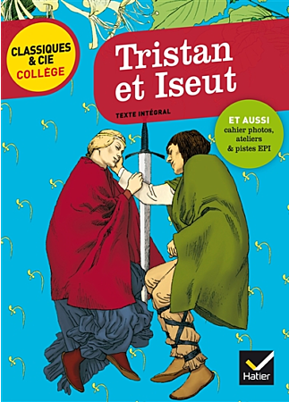

Cette séquence propose une découverte progressive de Tristan et Iseult
à travers des illustrations, des hypothèses de lecture puis des extraits adaptés.
Une courte vidéo est également disponible pour faciliter la compréhension de l'histoire :
Vidéo Tristan et Iseult.